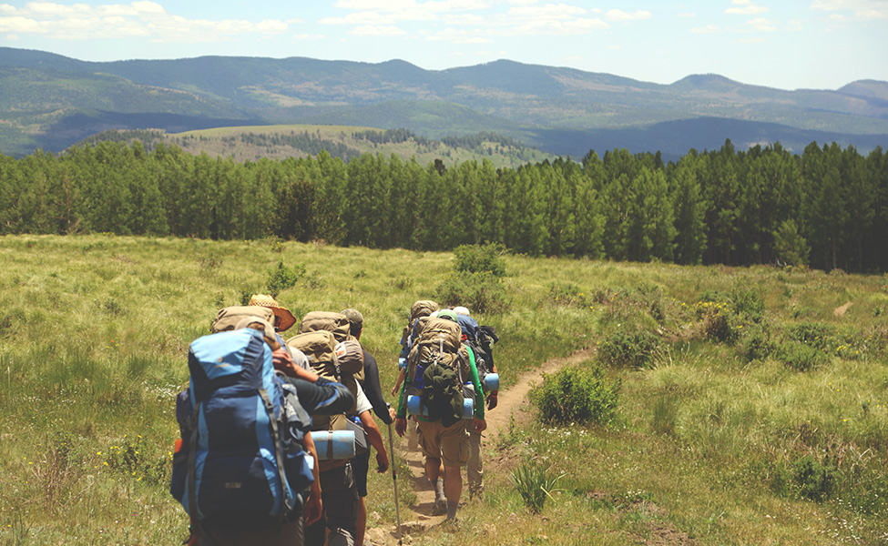
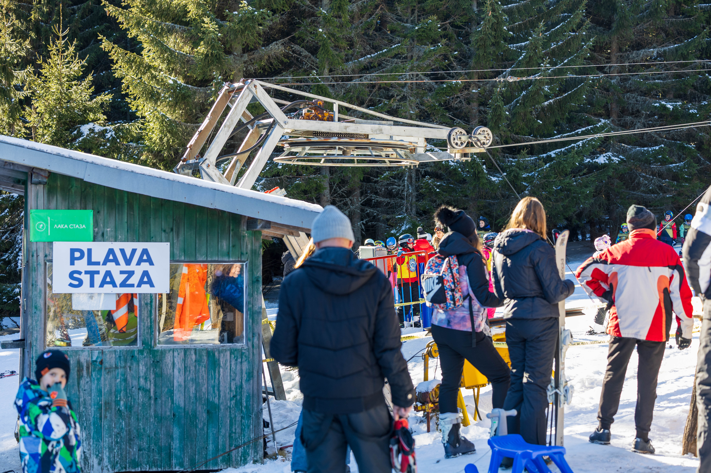
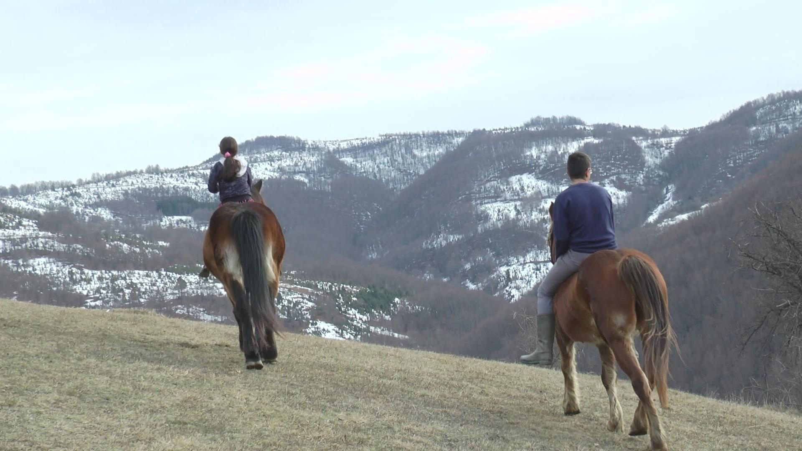
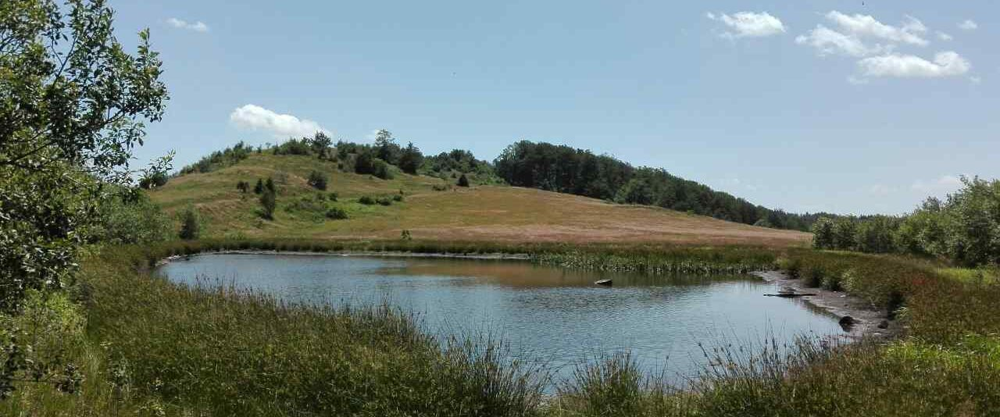
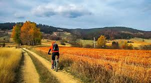
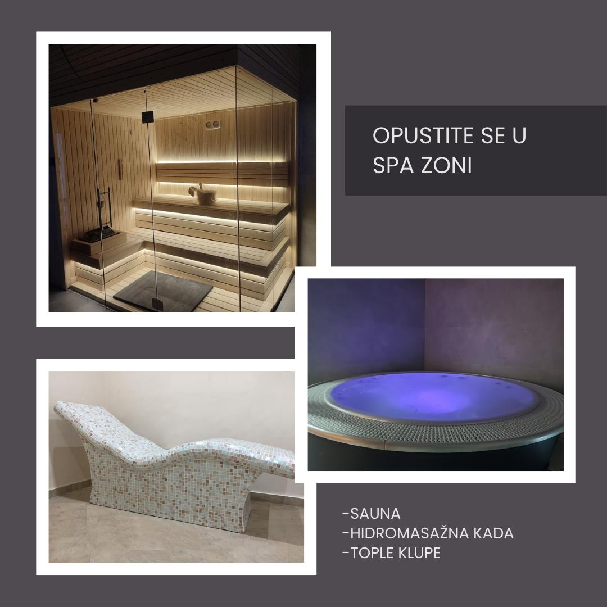

Golija je jedno od najlepših prirodnih područja u Srbiji, koje pruža raznovrsne aktivnosti tokom svih godišnjih doba. Planine, šume, jezera i livade stvaraju savršene uslove za ljubitelje prirode, bilo da ste skijaš, planinar, biciklista ili uživate u mirnom odmoru. U nastavku ćete saznati više o najpopularnijim aktivnostima koje Golija nudi.
Golija je prava oaza za sve ljubitelje planinarenja. Sa svojom raznolikom florom i faunom, Golija nudi staze koje vode kroz guste šume, prostrane livade, kao i uz vrhove planine od kojih se pružaju spektakularni pogledi. Bez obzira da li ste početnik ili iskusni planinar, postoji staza koja odgovara vašem nivou kondicije i željama. Popnite se do vrha Golije i uživajte u pogledu na prelepe predjele, ili se upustite u kraće ture koje vode kroz šumske staze. Popularna staza je i put do vrha Troglava, odakle se pruža nezaboravan pogled na okolne planine. Planinarenje na Goliji nije samo fizički izazov, već je i savršen način da pobegnete od gradske vreve i povežete se sa prirodom. Ovaj region je posebno interesantan u proleće i leto, kada cveta šumska vegetacija i kada je priroda u punom cvatu. U zimi, staze prekrivene snežnim slojem pružaju potpuno drugačije iskustvo, idealno za ljubitelje snijega i mirnog okruženja. Pored toga, Golija je poznata po svojoj raznovrsnoj divljoj fauni, tako da možete naići na mnoge vrste ptica, divljač, a ponekad i na stada divljih konja. Svaka tura planinarenja na Goliji nudi novo iskustvo, bilo da se radi o prelepim pogledima na okolne planine, ili o tišini koju možete doživeti, što je čini jednim od najlepših prirodnih rezervata u Srbiji.
Kada zima stigne na Goliju, ona se pretvara u pravi raj za ljubitelje zimskih sportova. Skijaški centar Golija nudi staze koje su pogodne za sve nivoe veštine, od početnika do iskusnih skijaša. Uz savremene žičare i staze, možete uživati u skijanju, snowboardingu ili jednostavnom sankanju. Golija je poznata po svom čistom, suvom snegu, što pruža jedinstveno iskustvo tokom zime. Pored skijanja, zima na Goliji pruža i mogućnost za zimske planinarske ture, vožnju sanki, te uživanje u mirnom okruženju prelepih snežnih pejzaža. Idealno je i za porodice sa decom, jer su staze široke i pogodne za početnike. U skijalištu se nalaze staze sa različitim stepenima težine, pa i iskusni skijaši mogu da pronađu izazov, dok je istovremeno savršeno za rekreativce koji žele da uživaju u čistom vazduhu i prelepim pogledima na Goliju. Pored toga, skijaški centar nudi i mogućnosti za vožnju sanki, kao i za uživanje u planiranim vožnjama sa vodičem, kroz snežne prostranstva. Ako ste ljubitelj zimskih sportova ili jednostavno želite uživati u miru zimske prirode, Golija je pravo odredište za vas. Posle celodnevnog skijanja, možete se opustiti u lokalnim restoranima i kafanama, uživajući u toplim napicima i srpskim specijalitetima.
Golija je takođe poznata po svojim konjima, a jahanje je jedna od aktivnosti koja se sve više praktikuje na ovoj planini. Postoji nekoliko rančeva i farmi na Goliji koje nude usluge jahanja, od početnih časova za one koji nikada nisu jahali, do vožnji kroz šume i livade za iskusnije jahače. Jahanje kroz Goliju je jedinstveno iskustvo jer možete uživati u pogledu na netaknutu prirodu i divlje pejzaže. Pored toga, ovo je savršen način da se opustite i povežete sa prirodom. Za ljubitelje konja, Golija nudi mogućnost da uživaju u vožnjama koje vode do skrivenih mesta, gde možete uživati u tišini i miru, daleko od gradske vreve. Jahanje je odličan način da se istraže predeli Golije, jer se dolazi do mesta koja su inače teško dostupna pešice. Takođe, jahanje je odlična opcija i za porodice sa decom, jer je sigurno i opuštajuće, a konji su izuzetno mirni. Ovaj oblik aktivnosti je pogodan za sve uzraste i nivoe veštine, jer instruktor vodi sve vožnje i vodi računa da se svi osećaju sigurno i komotno. Ako želite da osetite čari tradicionalnog života na selu i ujedno se opustite u prirodi, jahanje na Goliji je iskustvo koje morate isprobati.
Golija je dom nekoliko prelepih jezera koja su idealna za ljubitelje ribolova. Jezera kao što su Crno jezero, Borilovo jezero i Krvavac poznata su po svojoj bistrini i bogatstvu ribe. Ribolov na Goliji je miran, opuštajući i pruža savršen način da se povežete sa prirodom. U okolini jezera možete uživati u tišini i izolaciji, dok čekate ulov, a okruženje prelepih planinskih predela stvara nezaboravno iskustvo. Za ljubitelje vožnje čamcem, jezera na Goliji nude mogućnost za uživanje u vožnji čamcem, kao i za rekreativne aktivnosti na vodi. Osim ribolova, ovo je i idealno mesto za fotografisanje prirode ili jednostavno uživanje u miru i tišini prirode. U okolini jezera možete pronaći i divlje životinje, poput jelena, divokoza i ptica koje dolaze do vode. Ribolov na Goliji nije samo o sportu, već je to i prilika za opuštanje i uživanje u tišini prirode, daleko od svakodnevne gužve. Jezera su poznata po tome što su okružena netaknutim prirodnim okruženjem, što je čini jednim od najlepših destinacija za ribolovce u Srbiji. Bilo da ste početnik ili iskusan ribolovac, Golija pruža miran ambijent u kojem možete uživati u svom hobiju.
Golija nudi brojne biciklističke staze koje vode kroz šumske puteve, planinske predele i pored jezera, pružajući biciklistima mogućnost da istraže ovo prelepo područje na dva točka. Bilo da ste rekreativni biciklista ili ozbiljan sportista, na Goliji ćete pronaći stazu koja odgovara vašem nivou veštine. Postoje staze koje su pogodne za brdsku vožnju, kao i one koje vode kroz šumske staze i prelepe livade, pružajući vam mogućnost da ujedno uživate u vožnji i prelepim pogledima. Biciklizam na Goliji je odlična aktivnost za celu porodicu, jer možete istraživati prirodu, a ujedno se fizički aktivirati. Golija takođe nudi mogućnost za planinski biciklizam, sa izazovnijim stazama za one koji traže uzbuđenje i adrenalin. Pored staza koje vode kroz šumu i livade, Golija takođe nudi mogućnosti za vožnju po planinskim putevima, što biciklistima omogućava da uživaju u izazovnijim i tehnički zahtevnijim rutama. Biciklizam na Goliji pruža i priliku za uživanje u neverovatnim pogledima na okolne planine i jezera. Kroz biciklističke ture možete otkriti skrivene uvale i prelepe planinske predelы koji su inače nedostupni. Osim toga, biciklizam na Goliji je sjajan način da se povežete sa prijateljima i porodicom, uživajući u prirodi i zdravoj aktivnosti.
Apartmani Golijat nudi savršen opuštajući odmor nakon dana ispunjenog aktivnostima. Spa & Wellness centar u hotelu predstavlja idealno mesto za opuštanje tela i uma. Sa savremenim sadržajem i uslugama, gostima su na raspolaganju sauna, jacuzzi, masaže i brojne tretmane koji poboljšavaju zdravlje i pružaju potpuni relaks. Ovaj centar je dizajniran tako da vas povede na put opuštanja i revitalizacije, u harmoniji sa prirodom koja vas okružuje. Osećajte se kao novi čovek nakon iscrpljujuće planinarske ture, skijanja ili biciklizma. Uživajte u vrhunskim tretmanima lica i tela, a sve to u udobnosti i miru koji pruža pogled na prelepe planinske predjele Golije. Spa & Wellness ponuda je savršen način da završite svoj dan, bilo da ste u potrazi za opuštanjem, obnovom energije ili jednostavno želite uživati u luksuzu koji Golija nudi. Opuštajući tretmani i masaže koriste prirodne proizvode koji su specifični za ovaj region, a terapeuti su obučeni da pruže nezaboravno iskustvo. Sauna i jacuzzi su idealni za oslobađanje od stresa, dok različiti wellness tretmani pomažu u revitalizaciji tela i duha. Golija, sa svojim netaknutom prirodom, pruža savršen ambijent za potpuni oporavak i uživanje u svakom trenutku boravka.
+381-64-81-55-380
golijatapartman@gmail.com
Golija